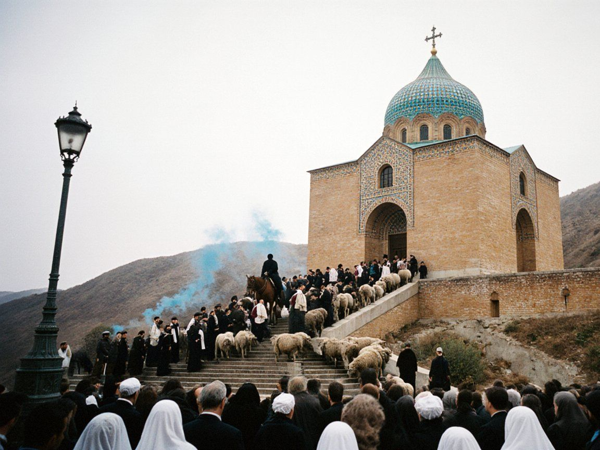
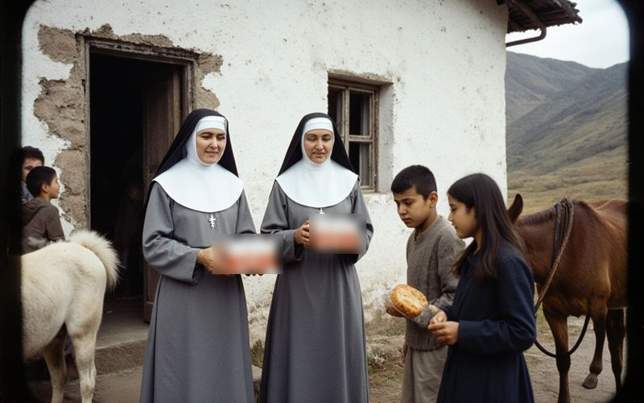
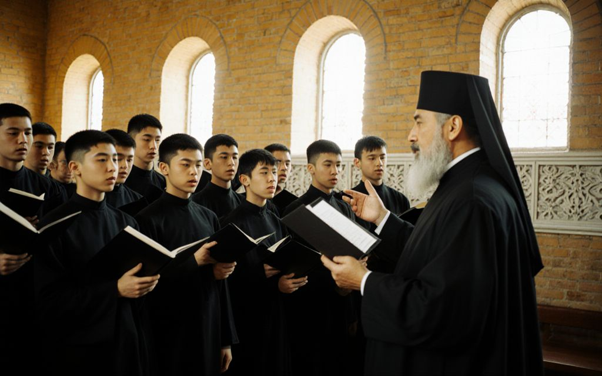
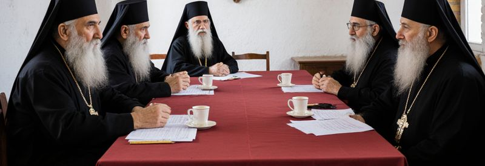

Church of St. Janyl
On Cathedral Hill above the Naryn since 1727. Mother church of the Syro-Iradi Catholic Church and the place where Iradis have come on pilgrimage for three hundred years.
Holy Qurbana and prayer
Sunday
- 7:00 Sapra (Morning Prayer) and Holy Qurbana Iradi
- 9:30 Solemn Holy Qurbana. The Archbishop presides on the first Sunday of the month Iradi and Syriac
- 12:00 Holy Qurbana for pilgrims and visitors English
- 17:30 Ramsha (Evening Prayer) Iradi and Syriac
Monday to Thursday
- 7:00 Sapra and Holy Qurbana Iradi
- 18:00 Ramsha Iradi
Friday
- 7:00 Sapra and Holy Qurbana Iradi
- 18:00 Ramsha Iradi
- 18:30 Holy Qurbana in the crypt, at the tomb of Mar Gewargis, for travellers and the sick Iradi
Saturday
- 7:00 Sapra and Holy Qurbana Iradi
- 11:00 Baptisms and crownings, by arrangement with the cathedral office
- 16:00 Confessions, until Ramsha Iradi, Russian, English
- 17:00 Ramsha Iradi
Times from 1 November (winter): Ramsha at 17:00. On feasts the Solemn Holy Qurbana replaces the 9:30 Qurbana; see the calendar. The cathedral closes to visitors during the Holy Qurbana; worshippers are always welcome.
News from the Cathedral
 14 October 2026Names of 1937 to be read in full on 14 November
14 October 2026Names of 1937 to be read in full on 14 NovemberOn the Commemoration of the victims of 1937 the cathedral will read every name now known from the Diocesan Archives, including 61 added this year.

9 October 2026Last mountain clinics before the passes closeThe Sisters of the Cross and the St. Luka Mission are making their last visits of the year to the high villages before the snow.

2 October 2026St. Ephrem Seminary opens its year with nine new studentsNine young men, four of them from the highland parishes, began their studies at the Major Seminary on Thursday.

25 September 2026Council of Hierarchs communiqué: “Water can be shared. It cannot be sold.”The autumn session of the Council of Hierarchs approved the Tartip for 2027, a new phase of work on the dome and a word on the renewal of the Naryn agreement.